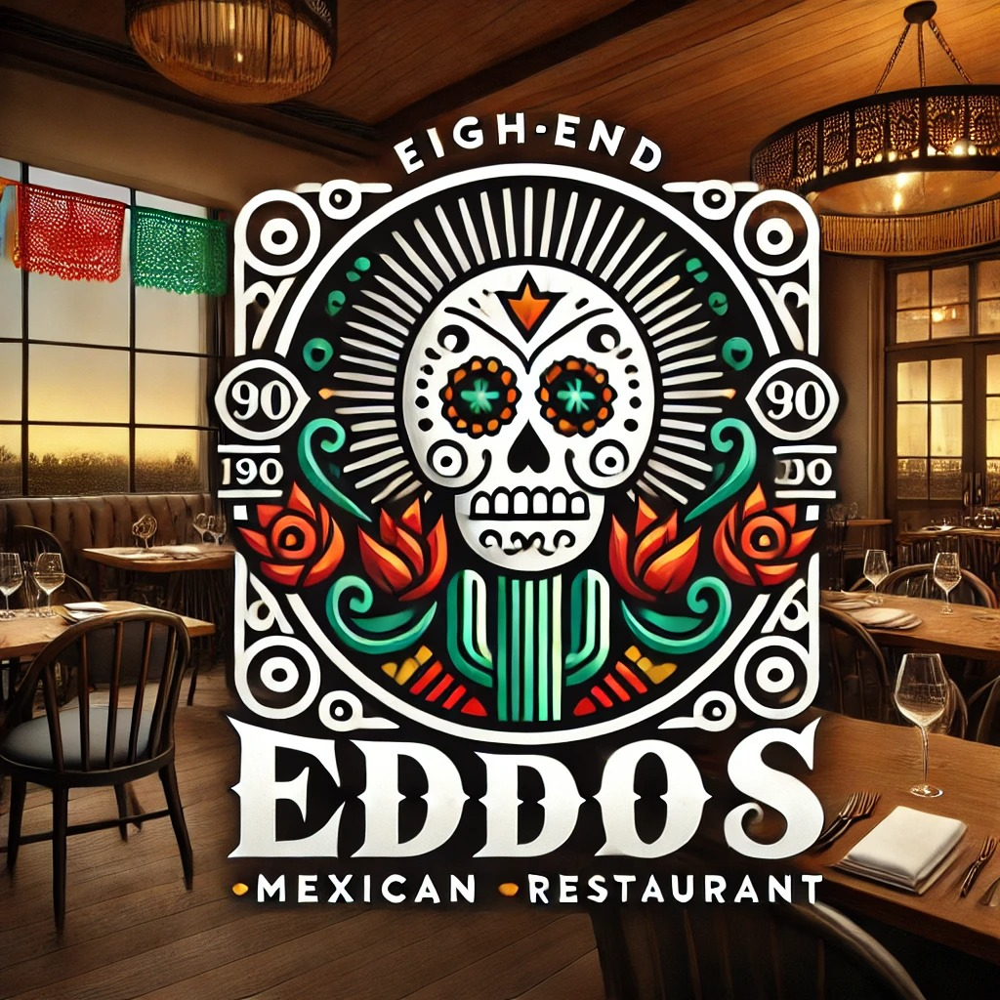

Pasión por la Tradición
Disfruta de la auténtica cocina mexicana con un toque de historia y sabor.

Una experiencia gastronómica única, donde la tradición y la innovación se encuentran.
Disfruta de la auténtica cocina mexicana con un toque de historia y sabor.
Vive la esencia de México en cada plato y celebra con nosotros cada momento.

Saborea la verdadera esencia de la cocina mexicana con ingredientes frescos y recetas tradicionales.

Comparte momentos especiales en un ambiente acogedor y familiar.

Descubre platillos únicos que combinan tradición y modernidad.

Explora la riqueza cultural de México a través de nuestros platillos.

Comprometidos con el medio ambiente y el uso de ingredientes locales y frescos.

Disfruta de un ambiente divertido y lleno de energía.

Deléitate con platillos sofisticados y una ambientación única.

Comparte momentos inolvidables con tus seres queridos.